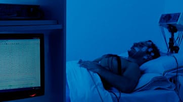

NEUROLOGÍA
La Neurología es la especialidad clínica de la medicina que se ocupa de la prevención, estudio, diagnóstico, tratamiento y rehabilitación de todas las enfermedades que involucran al sistema nervioso central, periférico y autónomo.
Además de lo mencionado, la Neurología se encarga de asistir a un paciente que se encuentre transitando una enfermedad neurológica, como así también de la investigación clínica y básica dentro de su área de especialidad. El médico encargado de llevar a cabo estos estudios es el neurólogo.
¿Para qué sirve la Neurología?
En el campo de la neurología, y a través de un examen neurológico, el médico busca detectar anomalías en el sistema nervioso central (compuesto por el cerebro, la médula espinal y los nervios).
Justamente el sistema nervioso central es el encargado de controlar todo lo que realiza el cuerpo humano: funcionamiento de los órganos, movimientos del cuerpo y el pensamiento.
¿En qué consiste un examen neurológico?
Un examen neurológico sirve para determinar la existencia o no de una enfermedad en el sistema nervioso de una persona. La realización de este estudio de manera anticipada permite obtener un tratamiento adecuado y reducir complicaciones a largo plazo.
Los síntomas pueden variar, dependiendo de la enfermedad, por tal motivo, es aconsejable realizar el estudio ante síntomas como: visión borrosa, dolores de cabeza, debilidad, convulsiones, fatiga, problemas con el equilibrio, cambios en la audición, etc. El examen neurológico consta de algunas pruebas, cuyo objetivo es analizar: equilibrio, fuerza muscular y cualquier otra función característica del sistema nervioso central.
Sacar turno